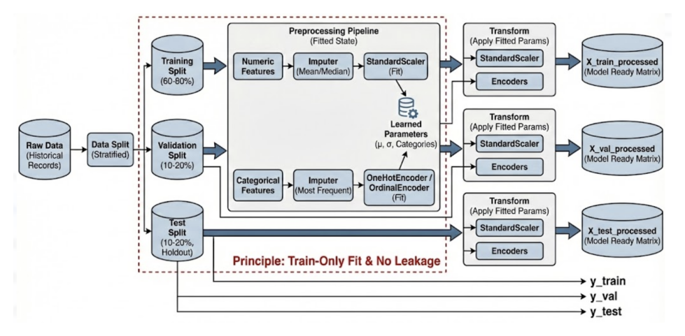
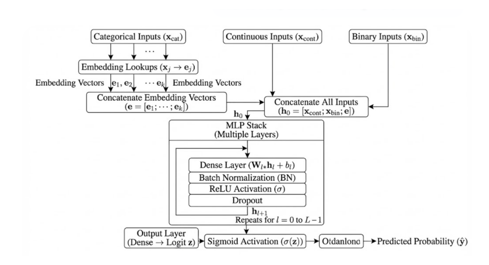
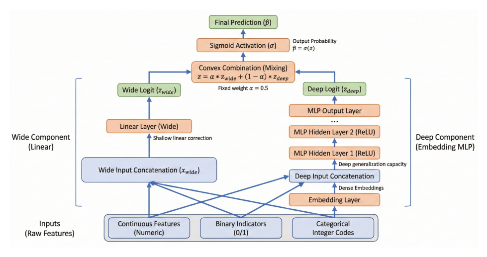
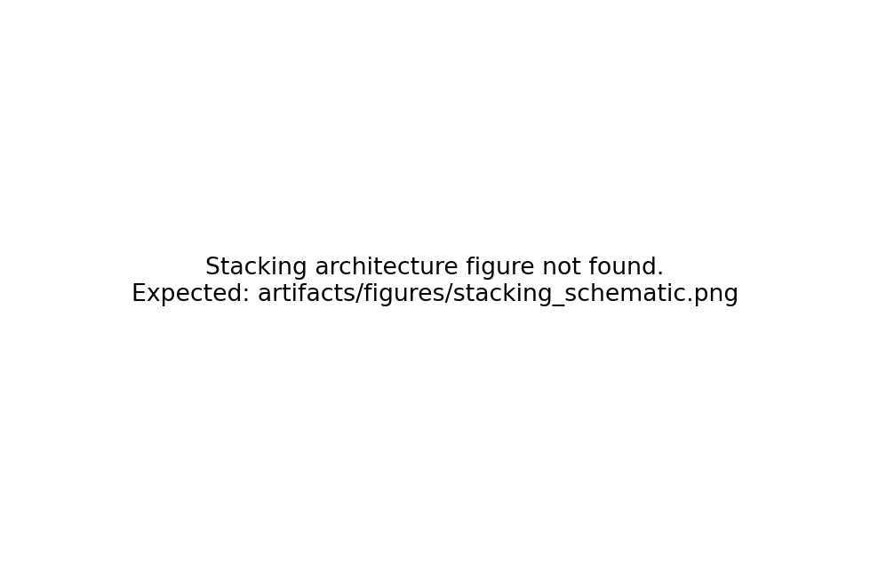
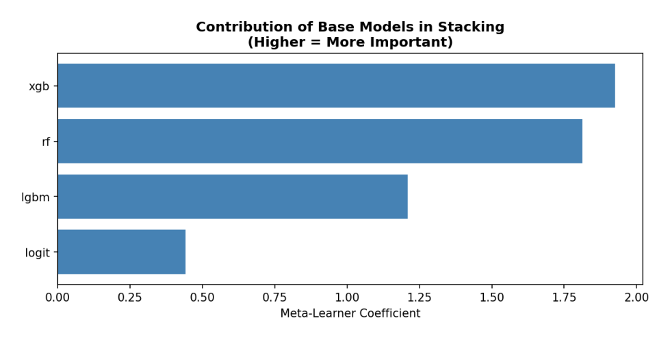

5 Methodology
5.1 Data Preprocessing Pipeline
The preprocessing pipeline transforms the raw Cell2Cell features into a modeling-ready format while strictly preventing data leakage between training, validation, and test splits. All pipeline parameters are estimated on the training set only and then applied unchanged to validation and test sets.
Feature scoping and leakage control. Feature inclusion is governed by a feature registry that records which columns are retained and how they should be treated for different model families. This registry-driven approach avoids per-notebook, ad hoc column selection and makes the modeling dataset auditable. As part of scoping, identifier fields and target fields are excluded from the feature set. In addition, retention-intervention variables are removed because they plausibly reflect post-outcome actions (for example, contact with a retention team or accepted retention offers) and can introduce leakage if used as predictors.
Training-only fitting of preprocessing parameters. To avoid leakage through preprocessing, all transformation parameters are estimated using the training split only, and then reused unchanged to transform validation and test sets (details of the splitting protocol are described in Section 5.2). For numeric variables, the pipeline computes training-set medians for imputation and training-set means and standard deviations for standardization. For categorical variables, it constructs a training-derived mapping from category strings to integer codes, reserving a default code for missing or unseen categories. The fitted parameters are saved for reproducibility and reusability across subsequent experiments.
Two output representations. Because different model families have different input requirements, the pipeline outputs two feature representations:
Base representation: A one-hot encoded feature matrix suitable for logistic regression and tree-based models, which require fixed-width numeric input without embedding layers.
Deep representation: A structured output separating continuous features (as a float tensor), categorical features (as integer indices for embedding lookup), and binary features (as a separate float tensor). This format feeds directly into PyTorch data loaders for neural network training.
Overall, this preprocessing design functions as a stable “data contract” for the rest of the thesis: later sections can focus on modeling and evaluation choices while relying on a consistent, leakage-aware, and reproducible transformation of raw telecom records into model inputs.
5.2 Experimental Design and Evaluation Protocol
All modeling experiments in this thesis follow a unified evaluation protocol to ensure fair comparison across model families. The core design choices are described below.
Data splitting strategy. The labeled dataset was divided into three non-overlapping subsets: a training set (70%), a validation set (15%), and a test set (15%). Stratified sampling was applied to maintain consistent churn prevalence (approximately 28.8%) across splits. The training set is used for model fitting and hyperparameter search; the validation set guides early stopping, threshold selection, and model selection decisions; the test set is reserved for final, unbiased performance reporting. No model selection or tuning decisions were made based on test-set results.
Primary evaluation metrics. Model ranking and selection were based primarily on two threshold-independent metrics:
ROC-AUC (Area Under the Receiver Operating Characteristic Curve): Measures the probability that a randomly chosen positive (churner) is ranked higher than a randomly chosen negative (non-churner). This metric is standard for binary classification and is insensitive to class imbalance when used for ranking purposes.
PR-AUC (Area Under the Precision–Recall Curve): Also known as Average Precision, this metric is more sensitive to performance on the minority class (churners) and is particularly relevant when class imbalance is present.
Fixed operating threshold for decision-level metrics. To enable consistent comparison of decision-level performance (precision, recall, F1), a single operating threshold (\(\tau = 0.4400\)) was selected on the validation set during the main tree-based model selection and then applied to all models uniformly. This fixed-threshold policy avoids per-model “best threshold” cherry-picking and reflects realistic deployment scenarios where a single, stable decision rule is applied across all customers.
Cross-validation for hyperparameter search. Where applicable (logistic regression, XGBoost with Optuna), hyperparameters were tuned using stratified 5-fold cross-validation on the training set, with ROC-AUC as the optimization objective. The best hyperparameters were then used to refit a final model on the full training set before evaluation on validation and test sets.
Reproducibility controls. All experiments used fixed random seeds (42) for data splitting, model initialization, and stochastic optimization. Model artifacts, including fitted parameters, training curves, and prediction outputs, were saved to enable exact reproduction of results.
5.3 Baseline Model: Regularized Logistic Regression
A regularized logistic regression model was developed as the supervised baseline for this churn prediction task. Logistic regression offers a transparent, interpretable starting point: its linear decision boundary and directly interpretable coefficients make it straightforward to identify which features contribute most to churn prediction before introducing more complex, non-linear methods.
The logistic regression model was trained on the same cleaned, leakage-controlled feature scope defined in the project’s feature registry, using the subset of predictors designated for the GLM family (i.e., features marked as retained for the linear baseline). Because categorical variables had already been expanded into a consistent one-hot feature space in the “base” representation created during preprocessing, the logistic regression stage operated directly on this fixed design matrix. Feature inclusion followed the registry logic: when a raw feature corresponded to a categorical variable, its associated one-hot columns were included as a group (via prefix-based matching), ensuring that the linear baseline used the complete encoded information for each retained categorical predictor while excluding disallowed or leaky fields.
Model fitting used L1/L2-regularized logistic regression with a controlled hyperparameter search restricted to the most impactful regularization choices. Specifically, the inverse regularization strength and the penalty type (L1 vs. L2) were tuned using a grid search. The search was evaluated via stratified 5-fold cross-validation on the training split, using ROC-AUC as the selection criterion, consistent with the overall evaluation protocol described in Section 5.2. The hyperparameter search space was intentionally constrained to regularization strength (\(C\)) and penalty type. This restricted scope ensures the baseline remains interpretable and stable, avoiding the risk of over-engineering.
After selecting the best hyperparameters under cross-validation, the final baseline model was refitted on the full training split and then evaluated under the common experimental protocol (validation used for operating-point selection; test reserved for final reporting). Threshold selection and any constraint-based operating-point choice were handled outside the training objective and followed the unified decision rule described in Section 5.2, so that the baseline and later models were compared under the same deployment-style evaluation assumptions.
5.4 Tree and Gradient-Boosted Tree Models
Tree-based methods were the primary non-linear modeling family for this structured telecom dataset. The modeling strategy progressed from a simple, interpretable tree to ensemble methods that improve generalization, and finally to gradient-boosted frameworks that typically deliver the strongest ranking performance on tabular data. Data splitting, metric definitions, and the shared threshold policy follow the experimental protocol in Section 5.2.
All tree models were trained on the same base, one-hot encoded representation produced by the preprocessing pipeline (Section 5.1). To keep the tree family comparable and leakage-safe, input columns were selected using the project’s feature registry (features explicitly marked as allowed for tree models). Categorical predictors were represented by their one-hot expansions in a shared column space. When a raw feature was retained, all corresponding dummy columns were included together (via prefix matching), ensuring consistent inclusion of encoded categorical information across the tree family.
5.4.1 Decision Tree Baseline (CART)
A single classification tree was used as a simple non-linear reference point. Because unpruned trees can overfit on tabular data, this baseline used explicit structural constraints, including a bounded maximum depth and minimum sample requirements for splits and leaves. These constraints provide controlled flexibility while preserving interpretability at the segment and rule level. Class imbalance was handled through balanced class weights so that splits were not dominated by the majority (non-churn) class. This model serves as a minimum viable non-linear benchmark and tests whether a small set of hierarchical rules can capture churn signals beyond a linear baseline.
5.4.2 Random Forest Ensemble
To improve stability and generalization beyond a single tree, a random forest classifier was trained as a bagging-based ensemble. Random forests reduce variance by averaging many decorrelated trees trained on bootstrap samples, and they typically provide stronger ranking quality than a single CART without requiring sensitive tuning. The implementation used a fixed configuration with a substantial number of trees and moderate depth control, along with feature subsampling to encourage diversity between trees. Class imbalance was addressed through balanced class weights, mirroring the single-tree setup. The forest is treated as a strong classical ensemble baseline rather than the primary optimized model.
5.4.3 Gradient-Boosted Frameworks: XGBoost and LightGBM
Gradient boosting was implemented with XGBoost as the main boosted framework. The baseline XGBoost configuration used moderate tree depth, a standard learning rate, and row and column subsampling to provide competitive performance without heavy search. Because boosting optimizes a differentiable loss over all observations, imbalance was handled through positive-class reweighting using a prevalence-based weight derived from the training set. This keeps the dataset intact while aligning the objective with churn detection asymmetry.
LightGBM was trained as a complementary boosted reference model. LightGBM uses a histogram-based algorithm and leaf-wise growth strategy, offering a different bias profile and computational behavior from XGBoost. In this study it was configured as a compact model with a fixed parameter set (rather than a full Bayesian search), including a moderate learning rate, a controlled number of estimators, and explicit regularization. Imbalance handling again used prevalence-based positive-class weighting.
5.4.4 Bayesian Hyperparameter Optimization
To obtain a high-quality boosted model under a reproducible and auditable search process, XGBoost was tuned using Bayesian optimization with Optuna. The tuning objective was mean ROC-AUC under stratified cross-validation on the training split, consistent with Section 5.2. A Tree-structured Parzen Estimator sampler proposed hyperparameters, and a median-based pruning rule stopped unpromising trials early to improve compute efficiency without changing the evaluation criterion.
The search space covered key capacity and regularization controls, including number of estimators, tree depth, learning rate (sampled on a log scale), row subsampling, column subsampling, minimum child weight, split regularization via gamma, and L1/L2 regularization. The best hyperparameters selected by cross-validated ROC-AUC were used to refit a final XGBoost model on the full training split before entering the shared validation and test evaluation pipeline.
5.4.5 Reproducibility and Model Artifacts
Across all tree and boosted models, the implementation was designed for deterministic reruns under the same data splits and feature registry constraints. Tuned parameters, fitted models, and evaluation summaries were saved as artifacts (serialized models and JSON metadata) to ensure that the methodology is auditable and that later stages such as ensembling and interpretation can reuse the same fitted estimators rather than retraining them implicitly.
5.5 Deep Learning Architecture
Neural network models were developed to test whether learned representations and higher-order non-linear interactions could provide incremental gains beyond tree-based methods on customer churn prediction. Unlike GBDTs, which learn interactions through recursive partitioning, neural models can combine continuous covariates and categorical embeddings in a unified latent space and potentially capture smooth interaction effects. All neural models were implemented in PyTorch and trained/evaluated under the common experimental protocol in Section 5.2.
5.5.1 Input representation and dataset construction
Neural models used the “deep” feature representation produced by the preprocessing stage, which separates variables into three semantic types to match common tabular deep learning practice:
5.5.1.1 Continuous features (float tensors).
A fixed set of numeric variables was provided as continuous inputs. These features were preprocessed in a leakage-safe manner using training-derived parameters (imputation and standardization), resulting in approximately zero-mean, unit-variance scaled inputs. Standardization improves optimization stability for gradient-based training and reduces sensitivity to feature scale differences.
5.5.1.2 Categorical features (integer-index tensors).
High-cardinality and ordinal variables were mapped to integer indices suitable for embedding lookup. Each categorical column was encoded using a training-derived vocabulary so that unseen categories at inference time can be mapped to a reserved index. This representation allows the network to learn dense, low-dimensional representations for each category rather than relying on sparse one-hot vectors.
5.5.1.3 Binary features (float tensors).
Binary indicators (e.g., yes/no flags, converted to 0/1) were passed directly as float inputs, preserving their semantic status while avoiding unnecessary embedding overhead for two-level variables.
This three-part input structure is assembled by a custom PyTorch Dataset class that returns aligned tensors for each batch, enabling modular experimentation with different network heads while keeping the data pipeline consistent.
5.5.2 Embedding MLP model
The first neural architecture is an Embedding MLP that learns dense representations for categorical features and concatenates them with continuous and binary inputs before passing through a multi-layer perceptron. This design follows common practice for tabular deep learning, where categorical embeddings can capture richer interactions than one-hot encoding while keeping the model end-to-end differentiable.
5.5.2.1 Embedding layer.
Each categorical feature is mapped to a learnable embedding vector. The embedding dimension for each feature is set heuristically (e.g., \(\min(50, \text{cardinality} // 2)\)) to balance expressiveness and regularization. All embeddings are concatenated into a single vector per sample.
5.5.2.2 MLP trunk.
The concatenated representation (embeddings + continuous + binary) is passed through a feedforward network with ReLU activations and dropout regularization between layers. A typical configuration uses three hidden layers with decreasing width (e.g., 256 → 128 → 64), though the exact architecture can be varied experimentally.
5.5.2.3 Output head.
A final linear layer with a single output unit produces a logit, which is passed through a sigmoid activation to yield a churn probability. For training, the loss is computed directly on the logit (using BCEWithLogitsLoss or focal loss variants), which is numerically more stable than applying sigmoid before loss computation.

5.5.3 Wide & Deep model
The second architecture is a Wide & Deep network inspired by the approach introduced by Google for recommendation systems. The key idea is to combine a “wide” linear component (which memorizes feature interactions explicitly) with a “deep” neural component (which generalizes through learned representations). This hybrid structure can capture both low-order, interpretable effects and high-order, non-linear interactions.
5.5.3.1 Wide component.
A linear layer directly connects the concatenated input features (continuous + binary + flattened embeddings or one-hot encoded categoricals) to the output logit. This component acts like a logistic regression and can memorize specific feature combinations that are predictive of churn.
5.5.3.2 Deep component.
The same input representation is passed through an MLP trunk (similar to the Embedding MLP described above) to produce a learned representation that captures non-linear interactions. The final hidden layer output is concatenated with the wide component’s linear contribution before the output layer.
5.5.3.3 Output combination.
The wide and deep contributions are summed (or concatenated and passed through a final linear layer) to produce the final logit. This architecture allows the model to benefit from both memorization (wide) and generalization (deep), which can be particularly useful for tabular data with both dense and sparse predictive patterns.

5.5.4 Training objective and handling class imbalance
Class imbalance (approximately 29% churn vs. 71% non-churn) can bias neural network training toward the majority class if not addressed. Two approaches were implemented and compared:
5.5.4.1 Weighted Binary Cross-Entropy (BCE).
The standard BCE loss is modified by assigning a higher weight to positive (churn) samples. If \(w_{\text{pos}}\) denotes the positive-class weight, the loss for a single sample becomes:
\[ \mathcal{L}_{\text{weighted-BCE}} = -w_{\text{pos}} \cdot y \log(\hat{p}) - (1 - y) \log(1 - \hat{p}) \]
The weight \(w_{\text{pos}}\) is typically set to the inverse class frequency ratio (e.g., \(w_{\text{pos}} = \frac{N_{\text{neg}}}{N_{\text{pos}}}\)) so that the total contribution of positive and negative samples is balanced. This approach directly addresses the numerical dominance of majority-class gradients during training.
5.5.4.2 Focal Loss.
An alternative is focal loss, which down-weights easy examples (those classified correctly with high confidence) and focuses training on hard examples:
\[ \mathcal{L}_{\text{focal}} = -\alpha_t (1 - p_t)^\gamma \log(p_t) \]
where \(p_t = \hat{p}\) if \(y = 1\) else \(1 - \hat{p}\), \(\alpha_t\) is a class-balancing weight, and \(\gamma > 0\) is the focusing parameter. Higher \(\gamma\) increases the focus on hard-to-classify examples. Focal loss was originally proposed for object detection but has shown benefits for imbalanced tabular classification as well.
Importantly, both approaches preserve the original data distribution (no oversampling) and fit naturally into the probabilistic scoring framework required by Section 5.2 (ROC/PR evaluation and validation-based thresholding).
5.5.5 Optimization, regularization, and model selection
All neural models were trained using the Adam optimizer with a learning rate selected from a small grid (e.g., \(\{10^{-3}, 10^{-4}\}\)). Training proceeded for a maximum number of epochs with early stopping based on validation ROC-AUC: if the validation metric did not improve for a specified patience window, training was halted and the best checkpoint was restored.
Regularization was applied through dropout (applied after each hidden layer) and optional weight decay. Batch normalization was not used in the main experiments to keep the architecture simple and to avoid potential issues with small batch sizes during inference.
Model selection among neural architectures (Embedding MLP vs. Wide & Deep) and loss functions (weighted BCE vs. focal loss) was performed by comparing validation ROC-AUC. The best-performing configuration was then evaluated on the held-out test set for final reporting.
Artifacts and reproducibility. All models output churn risk scores that were evaluated using the unified metrics and thresholding procedure in Section 5.2. Artifacts, including training curves, saved model weights, and prediction files, were recorded to enable reproducibility and to support downstream interpretation and ensemble construction in later sections.
5.6 Unsupervised and Semi-supervised Extension
Beyond purely supervised learning, I investigated whether unlabeled customer records could be exploited to improve churn prediction through (i) unsupervised representation learning and (ii) confidence-based pseudo-labeling. The core idea is that, even without labels, the marginal distribution of customer behavior may contain useful structure (e.g., common usage profiles and atypical patterns) that can be distilled into a compact latent representation and transferred to the downstream churn model. Consistent with Section 5.1, this extension operates on the same cleaned feature schema, while Section 5.2 defines the evaluation protocol used to compare all variants.
5.6.1 Denoising Autoencoder (DAE)
A denoising autoencoder was trained on the numeric feature subset (all continuous columns) without using churn labels. The DAE consists of:
- Encoder: A feedforward network that maps the (corrupted) input features to a lower-dimensional latent representation \(\mathbf{z}\).
- Decoder: A symmetric feedforward network that reconstructs the original (uncorrupted) input from \(\mathbf{z}\).
- Noise injection: During training, input features are corrupted by additive Gaussian noise or masking dropout. The model is trained to reconstruct the clean input, which encourages the encoder to learn robust, denoised representations.
The reconstruction loss (mean squared error between input and output) is minimized using Adam optimizer with early stopping based on validation reconstruction loss.
Label-Free Training. The DAE is trained without using churn labels, and can therefore incorporate both labeled and unlabeled records in a leakage-safe manner (labels are never accessed). Model selection is performed using a held-out validation split and early stopping based on validation reconstruction loss, selecting the epoch that best balances fit and generalization of the learned representation. Once trained, the encoder is treated as a deterministic feature extractor that produces a latent vector for each customer.
5.6.2 Downstream Usage: Latent Feature Augmentation
After training, the encoder is frozen and used to extract latent representations for all samples (train, validation, test, and unlabeled holdout). These latent features are then concatenated with the original feature set to form an augmented input representation for the downstream supervised model (e.g., XGBoost). The hypothesis is that the learned latent space may capture useful structure (e.g., customer segments, anomaly patterns) that improves discrimination when combined with the original features.
Both variants are evaluated against the supervised baseline using the identical split and metric definitions in Section 5.2, ensuring that any observed change can be attributed to representation learning rather than differences in preprocessing or evaluation.
5.6.3 Pseudo-Labeling Extension
To test whether unlabeled data can provide additional training signal, a pseudo-labeling strategy was implemented:
- Teacher model: An Optuna-tuned XGBoost model trained on labeled data serves as the teacher.
- Confidence thresholding: The teacher scores the unlabeled holdout set. Samples with predicted probability \(p \geq 0.95\) are pseudo-labeled as churners; samples with \(p \leq 0.05\) are pseudo-labeled as non-churners. Samples in between are discarded as uncertain.
- Student training: A new model is trained on the union of labeled data and high-confidence pseudo-labeled data.
This conservative threshold strategy prioritizes label quality over quantity, accepting only pseudo-labels where the teacher is highly confident.
5.7 Heterogeneous Stacking Ensemble
To improve robustness beyond any single model family, I implemented a heterogeneous ensemble that combines complementary inductive biases through probability-level aggregation. Rather than relying on a single “best” learner, the ensemble treats each trained model as a noisy but informative estimator of churn risk, and then learns (or prescribes) a principled rule for combining their probability outputs. This section describes the ensemble design and training protocol; performance comparisons are reported later under the common evaluation policy defined in Section 5.2.
5.7.1 Base Learners
The ensemble uses the following base learners, all trained on the same feature representation and data splits:
- Logistic Regression (linear baseline)
- XGBoost (Optuna-tuned gradient boosting)
- LightGBM (histogram-based gradient boosting)
- Random Forest (bagging-based ensemble)
- Wide & Deep Neural Network (best neural configuration)
These models span different inductive biases: linear vs. non-linear, tree-based vs. neural, single-model vs. ensemble. The diversity in model families is expected to provide complementary error profiles, which is the key requirement for ensemble benefit.
5.7.2 Blending Strategies
Three blending strategies were evaluated:
Simple Average: Equal-weight averaging of predicted probabilities: \(\hat{p}_{\text{blend}} = \frac{1}{K} \sum_{k=1}^{K} \hat{p}_k\)
AUC-Weighted Average: Weights proportional to each model’s validation ROC-AUC: \(w_k = \frac{\text{AUC}_k}{\sum_j \text{AUC}_j}\)
NNLS-Optimized Weights: Non-negative least squares regression on validation predictions to find optimal weights that minimize squared error relative to true labels.
5.7.3 Out-of-Fold (OOF) Stacking
Leakage Control via OOF. The key methodological requirement for stacking is leakage control, as the meta-learner must be trained on base predictions that are out-of-sample with respect to the base learners. I therefore used a \(K\)-fold Out-of-Fold (OOF) protocol on the training split. For each fold \(k\), each base estimator is fit on the \(K - 1\) training folds and used to predict probabilities on the held-out fold. Concatenating held-out predictions across folds yields an OOF prediction matrix \(Z_{OOF}\) where every row corresponds to a training instance and every column to a base learner, with the guarantee that each entry was generated by a model that did not train on that instance.
Meta-Learner Training. A Ridge logistic regression meta-learner is trained on \(Z_{OOF}\) to learn optimal combination weights. The meta-learner’s coefficients indicate the relative contribution of each base learner to the final ensemble prediction.

5.7.4 Meta-Learner Weights Visualization
After training, the meta-learner coefficients can be visualized to understand the relative contribution of each base model. Positive coefficients indicate models that contribute positively to the ensemble prediction; larger coefficients indicate stronger contributions.

5.7.5 Inference Pipeline
At inference time, all base models are applied to the test set to produce a prediction matrix \(Z_{\text{test}}\). The meta-learner then combines these predictions to produce final ensemble probabilities. The operating threshold (\(\tau = 0.4400\)) is applied to these ensemble probabilities to generate binary churn predictions for evaluation.